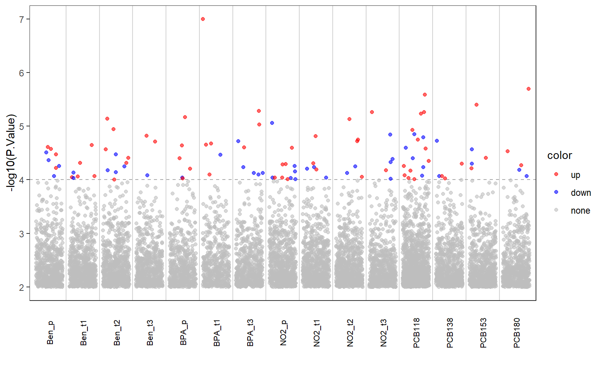

if (!requireNamespace("BiocManager", quietly = TRUE)) {
install.packages("BiocManager")
}
packages <- c(
"Biobase", "mice", "MultiDataSet", "lsr", "FactoMineR",
"stringr", "circlize", "corrplot", "ggplot2", "reshape2", "pryr",
"scales", "imputeLCMD", "scatterplot3d", "glmnet", "gridExtra",
"grid", "Hmisc", "gplots", "gtools", "S4Vectors",
"Biobase", "methods", "snpStats", "limma", "sva", "ggplot2",
"ggrepel", "PMA", "omicade4", "ggplot2", "qqman", "gridExtra"
)
for (pkg in packages) {
if (!pkg %in% rownames(installed.packages())) {
message("Installing ", pkg)
BiocManager::install(pkg)
}
}
devtools::install_github("isglobal-brge/rexposome")
#> Skipping install of 'rexposome' from a github remote, the SHA1 (0bb431c5) has not changed since last install.
#> Use `force = TRUE` to force installation
devtools::install_github("isglobal-brge/omicRexposome")
#> Skipping install of 'omicRexposome' from a github remote, the SHA1 (c8716b17) has not changed since last install.
#> Use `force = TRUE` to force installation
devtools::install_github("isglobal-brge/brgedata")
#> Skipping install of 'brgedata' from a github remote, the SHA1 (e649549b) has not changed since last install.
#> Use `force = TRUE` to force installation暴露组学关联分析
本篇是对omicRexposome包中“association”分析流程的拆解，其源代码为MultiDataSet-association.R，omicRexposome包的官方分析流程可以参考教程，该包相关文献为Multi-omics signatures of the human earlylife exposome。
安装相关R包
我们的测试数据来自于brgedata包，同时需要安装rexposome和omicRexposome包。
关联分析思路
暴露组学与单组学的关联分析思路大致为：单组学设置为响应变量Y，暴露组学中的单个暴露因素设置为X，添加表型数据中的某些表型为协变量Z，使用limma进行建模分析，循环每个暴露因素，得到每个暴露因素与响应变量的回归系数和显著度。除此之外，源码MultiDataSet-association.R文件中还添加了检查输入数据和进行SVA分析的功能。
输入检查
-
单组学，暴露组，表型数据，它们的样本数必须一致，删除不一致的样本。
if (warnings | verbose) { warning("Sets from 'MultiDataSet' will be reduced to common samples") } l1 <- vapply(Biobase::sampleNames(object)[c(omicset, expset)], length, FUN.VALUE = numeric(1)) object <- MultiDataSet::commonSamples(object) l2 <- sapply(Biobase::sampleNames(object)[c(omicset, expset)], length) l3 <- mapply("-", l1, l2, SIMPLIFY = FALSE) if (verbose) { message(paste(unlist(l3), names(l3), sep = " samples were reduced from ", collapse = ", " )) } -
暴露因素和表型数据构成了设计矩阵，所以它们的数据必须没有NA值，
na.loc <- rowSums(apply(exp.dt, 2, is.na)) na.loc <- which(na.loc != 0) if (length(na.loc) != 0) { if (warnings | verbose) { warning( "There are missing values. ", length(na.loc), " samples will be removed." ) } exp.dt <- exp.dt[-na.loc, , drop = FALSE] }且不是常量。
替代变量分析（SVA）
当数据的异质性很大时，即使我们已经测量并尝试校正了一些已知的协变量（如年龄、性别、处理组等），可能仍然存在未被观测到的系统性变异来源（例如实验批次、样本处理时间、技术噪声等），这些因素会影响分析结果，导致假阳性或降低检验效能。
SVA的核心思想是：识别并建模数据中主要的隐性变异模式（即“替代变量”），然后在后续的关联分析中将这些变量作为协变量加以调整，从而提高结果的准确性和可重复性。
design.mm <- model.matrix(formula(design), data = exp.dt)
# If required, apply SVA
n.sv <- NA
if (sva == "fast") {
## Determine number of surrogate variables
Y.r <- t(stats::resid(stats::lm(t(omic) ~ exp.dt[, ex])))
# ,data=exp.dt)))
n.sv <- isva::EstDimRMT(Y.r, FALSE)$dim + 1
if (n.sv > 0) {
sv.obj <- SmartSVA::smartsva.cpp(omic,
design.mm,
mod0 = NULL, n.sv = n.sv
)
design.mm <- cbind(design.mm, sv.obj$sv)
}
} else if (sva == "slow") {
if (verbose | warnings) {
message("Computing SVA. This step can be very time consuming.")
if (is.null(vfilter)) {
message("Consider using argument 'vfilter'.")
}
}
## Determine number of surrogate variables
n.sv <- sva::num.sv(omic,
design.mm,
vfilter = vfilter
)
if (n.sv > 0) {
sv.obj <- sva::sva(omic, design.mm,
# design.mm[ , -1, drop=FALSE],
n.sv = n.sv, vfilter = vfilter
)
design.mm <- cbind(design.mm, sv.obj$sv)
}
}整理上面的思路并总结出自己的分析流程
提取分析数据
# 表型数据
data("brge_expo", package = "brgedata")
pDat <- Biobase::pData(brge_expo) |>
tibble::rownames_to_column(var = "SampleID") |>
tibble::as_tibble()
#> Loading required package: rexposome
#> Loading required package: Biobase
#> Loading required package: BiocGenerics
#>
#> Attaching package: 'BiocGenerics'
#> The following objects are masked from 'package:stats':
#>
#> IQR, mad, sd, var, xtabs
#> The following objects are masked from 'package:base':
#>
#> anyDuplicated, aperm, append, as.data.frame, basename, cbind,
#> colnames, dirname, do.call, duplicated, eval, evalq, Filter,
#> Find, get, grep, grepl, intersect, is.unsorted, lapply, Map,
#> mapply, match, mget, order, paste, pmax, pmax.int, pmin,
#> pmin.int, Position, rank, rbind, Reduce, rownames, sapply,
#> saveRDS, setdiff, table, tapply, union, unique, unsplit,
#> which.max, which.min
#> Welcome to Bioconductor
#>
#> Vignettes contain introductory material; view with
#> 'browseVignettes()'. To cite Bioconductor, see
#> 'citation("Biobase")', and for packages 'citation("pkgname")'.
#>
#> Attaching package: 'rexposome'
#> The following object is masked from 'package:BiocGenerics':
#>
#> plotPCA
# 暴露组学数据
data("brge_expo", package = "brgedata")
exDat <- rexposome::expos(brge_expo) |>
tibble::as_tibble(rownames = "SampleID") |>
tibble::as_tibble()
# 转录组学数据
data("brge_gexp", package = "brgedata")
gDat <- Biobase::exprs(brge_gexp) |>
tibble::as_tibble(rownames = "geneID") |>
tibble::as_tibble()组学数据预处理
不同组学数据需要根据要解释的效应水平进行预处理。例如，甲基化数据需要解释为变化范围，不做任何处理；其他如转录组，需要解释为变化倍数，要进行log转换：
ScaleOmic <- function(data, omics) {
if (omics == "methylation") {
data <- data
} else {
# data <- log2(data)
data <- data # 示例数据已经log2处理
}
}SVA分析函数
# SVA <- function(omic, design.omic, y) {
# n.sv <- sva::num.sv(
# omic,
# design.omic
# )
# if (n.sv > 0) {
# sv.obj <- sva::sva(as.matrix(omic), design.omic, n.sv = n.sv)
# design.omic <- cbind(design.omic, sv.obj$sv)
# }
# return(design.omic)
# }
#' 快速计算SVA
#'
#' @param omic {matrix} 组学数据，行是样本，列是特征
#' @param design.omic {matrix} 设计矩阵
#'
#' @return 增加了SVA的设计矩阵
#'
SVA <- function(omic, design.omic, y) {
omic <- as.matrix(omic)
Y.r <- t(stats::resid(stats::lm(t(omic) ~ design.omic[, 2])))
n.sv <- isva::EstDimRMT(Y.r, FALSE)$dim + 1
if (n.sv > 0) {
sv.obj <- SmartSVA::smartsva.cpp(
omic,
design.omic,
mod0 = NULL, n.sv = n.sv
)
design.omic <- cbind(design.omic, sv.obj$sv)
}
return(design.omic)
}limma 建模函数
#' 单个暴露因素与组学的关联分析
#'
#' @param ex {string} 暴露因素
#' @param covars {string-vector} 协变量
#' @param exDat {tibble} 暴露因素数据
#' @param pDat {tibble} 表型数据
#' @param gDat {tibble} 组学数据
#'
#' @return {tibble} \code{limma::topTable}结果，并更新了logFC和SE
#'
exwas <- function(ex, covars, exDat, pDat, gDat) {
# ex <- "Ben_p"
X <- dplyr::left_join(pDat, exDat, by = "SampleID") |>
dplyr::select(SampleID, dplyr::all_of(c(ex, covars)))
design.omic <- stats::model.matrix(
as.formula(paste("~ ", paste(c(ex, covars), collapse = "+"))),
data = X
)
gDat <- gDat |>
tibble::column_to_rownames(var = "geneID") |>
dplyr::select(dplyr::all_of(X$SampleID[as.numeric(rownames(design.omic))])) |>
as.data.frame()
gDat[] <- ScaleOmic(gDat, omics = "transcriptome")
design.omic <- SVA(gDat, design.omic)
fit <- limma::lmFit(gDat, design.omic)
fit <- limma::eBayes(fit)
res <- limma::topTable(fit, coef = ex, number = Inf, adjust.method = "BH", sort.by = "B") |>
tibble::rownames_to_column(var = "geneID") |>
tibble::as_tibble() |>
# design.omic，stdev.unscaled 是matrix，只能用[, ex]索引
dplyr::mutate(
logFC = logFC * IQR(design.omic[, ex]),
SE = (sqrt(fit$s2.post) * fit$stdev.unscaled[, ex])
)
return(res)
}循环暴露因素分析
sampleP <- pDat$SampleID
sampleE <- exDat$SampleID
sampleG <- colnames(gDat)[-1]
samples <- purrr::reduce(list(sampleP, sampleE, sampleG), intersect)
exDat <- dplyr::filter(exDat, SampleID %in% samples)
pDat <- dplyr::filter(pDat, SampleID %in% samples)
gDat <- dplyr::select(gDat, geneID, dplyr::all_of(samples))
covars <- c("Asthma", "Sex", "Age")
expos <- colnames(exDat)[-1]
res <- purrr::map(
expos,
~ exwas(.x, covars, exDat, pDat, gDat)
) |>
purrr::set_names(expos)
res[[1]]
#> # A tibble: 67,528 × 8
#> geneID logFC AveExpr t P.Value adj.P.Val B SE
#> <chr> <dbl> <dbl> <dbl> <dbl> <dbl> <dbl> <dbl>
#> 1 TC13000973.hg.1 0.161 2.72 4.62 0.0000244 0.564 0.311 0.301
#> 2 TC13000069.hg.1 0.165 2.68 4.60 0.0000268 0.564 0.260 0.0893
#> 3 TC08000518.hg.1 -0.0657 3.78 -4.55 0.0000311 0.564 0.181 0.161
#> 4 TC04002007.hg.1 0.151 1.55 4.53 0.0000334 0.564 0.142 0.184
#> 5 TC13001656.hg.1 -0.174 3.54 -4.46 0.0000428 0.578 0.00807 0.0933
#> 6 TC04000954.hg.1 -0.0673 6.46 -4.38 0.0000557 0.579 -0.134 0.0562
#> # ℹ 67,522 more rowslamda Score
因为我们执行的是多重假设检验，需要对检验结果的可靠性进行评价，常见的是绘制QQ图，这里也可以使用lambda score。
lambdaClayton(res[[1]]$P.Value)
#> [1] 1.004892绘制曼哈顿图
#' 绘制曼哈顿图
#'
#' @param exwasRes {list} exwas结果
#' @param th {numeric} 显著性阈值，默认1e-5
#'
#' @return 曼哈顿图
#'
GetManhattan <- function(exwasRes, th = 10e-5, exposureInfo = NULL) {
plotDat <- purrr::list_rbind(exwasRes, names_to = "Exposure") |>
dplyr::filter(`P.Value` < th * 100) |>
dplyr::mutate(
color = ifelse(logFC > 0, "up", "down"),
color = ifelse(`P.Value` < th, color, "none"),
color = factor(color, levels = c("up", "down", "none"))
)
vlineDat <- tibble::tibble(x = seq_len(length(exwasRes))[-1] - 0.5)
p1 <- ggplot2::ggplot() +
ggplot2::geom_vline(data = vlineDat, ggplot2::aes(xintercept = x), color = "lightgray") +
ggplot2::geom_hline(yintercept = -log10(th), linetype = "dashed", color = "darkgray") +
ggplot2::geom_jitter(data = plotDat, ggplot2::aes(x = Exposure, y = -log10(`P.Value`), color = color), alpha = 0.6) +
ggplot2::scale_color_manual(values = c("up" = "red", "down" = "blue", "none" = "grey")) +
# ggplot2::scale_x_discrete(expand = c(0, 0)) +
# ggplot2::scale_y_continuous(expand = c(0, 0)) +
ggplot2::theme_test() +
ggplot2::theme(
axis.title.x = ggplot2::element_blank(),
axis.text.x = ggplot2::element_blank(),
axis.ticks.x = ggplot2::element_blank()
) +
ggplot2::labs(y = "-log10(P.Value)")
exDat <- tibble::tibble(
Exposure = names(exwasRes),
group = names(exwasRes),
color = "transparent"
)
p2 <- ggplot2::ggplot(exDat, ggplot2::aes(x = Exposure, y = "Exposure", fill = color)) +
ggplot2::geom_tile() +
ggplot2::geom_text(ggplot2::aes(label = Exposure), color = "black", angle = 90, size = 8 / ggplot2::.pt) +
ggplot2::scale_fill_identity() +
ggplot2::theme_void() +
ggplot2::theme(legend.position = "none")
p <- aplot::insert_bottom(p1, p2, height = 0.2)
return(p)
}
GetManhattan(res)